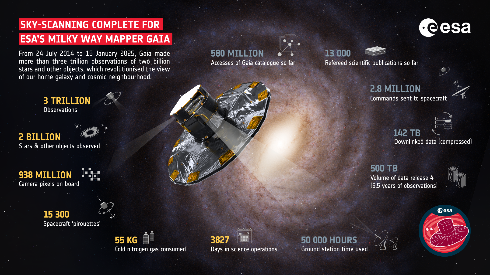

Last starlight for ground-breaking Gaia
The European Space Agency’s Milky Way-mapper Gaia has completed the sky-scanning phase of its mission, racking up more than three trillion observations of about two billion stars and other objects over the last decade to revolutionise the view of our home galaxy and cosmic neighbourhood.
Launched on 19 December 2013, Gaia’s fuel tank is now approaching empty – it uses about a dozen grams of cold gas per day to keep it spinning with pinpoint precision. But this is far from the end of the mission. Technology tests are scheduled for the weeks ahead before Gaia is moved to its ‘retirement’ orbit, and two massive data releases are tabled for around 2026 and the end of this decade, respectively.
“Today marks the end of science observations and we are celebrating this incredible mission that has exceeded all our expectations, lasting for almost twice its originally foreseen lifetime,” says ESA Director of Science Carole Mundell.
“The treasure trove of data collected by Gaia has given us unique insights into the origin and evolution of our Milky Way galaxy, and has also transformed astrophysics and Solar System science in ways that we are yet to fully appreciate. Gaia built on unique European excellence in astrometry and will leave a long-lasting legacy for future generations."
“After 11 years in space and surviving micrometeorite impacts and solar storms along the way, Gaia has finished collecting science data. Now all eyes turn towards the preparation of the next data releases,” says Gaia Project Scientist Johannes Sahlmann.
“I am thrilled with the performance of this incredible mission, and excited about the discoveries that await us.”
Researchers from the Institute of Cosmos Sciences of the University of Barcelona (ICCUB) have played a crucial role in the Gaia mission since the very beginning.
"The Gaia team at the University of Barcelona has been working on the mission since its inception around 1997." says Xavier Luri, director of the ICCUB and member of the Gaia UB team. "Since then, they have participated in all its phases, from defining the scientific case and industrial design to data processing and scientific exploitation. Now, although Gaia is ending its observations, several years of work remain to fully process all the data collected over these years and publish two additional data releases (DR4 and DR5)."
Gaia delivers best Milky Way map
Gaia has been charting the positions, distances, movements, brightness changes, composition and numerous other characteristics of stars by monitoring them with its three instruments many times over the course of the mission.
This has enabled Gaia to deliver on its primary goal of building the largest, most precise map of the Milky Way, showing us our home galaxy like no other mission has done before.
As such, we now also have the best reconstructed view of how our galaxy might look to an outside observer. This new artist impression of the Milky Way incorporates Gaia data from a multitude of papers over the past decade.
Gaia has changed our impression of the Milky Way. Even seemingly simple ideas about the nature of our galaxy’s central bar and the number of spiral arms have been overturned. For example, Gaia has shown us that it has more than two spiral arms and that they are less prominent than we previously thought. In addition, its central bar is more inclined with respect to the Sun, and the connection points between the bar and the arms are different to what was previously assumed.
No spacecraft can travel beyond our galaxy, so we can’t take a selfie, but Gaia is giving us the best insight yet of what our home galaxy looks like. Once all of Gaia’s observations collected over the past decade are made available in two upcoming data releases, we can expect an even sharper view of the Milky Way.
Credit: ESA/Gaia/DPAC, Stefan Payne-Wardenaar CC BY-SA 3.0 IGO or ESA standard License
“It contains major changes from previous models, because Gaia has changed our impression of the Milky Way. Even basic ideas have been revised, such as the rotation of our galaxy’s central bar, the warp of the disc, the detailed structure of spiral arms, and interstellar dust near the Sun,” says Stefan Payne-Wardenaar, scientific visualiser at the Max Planck Institute for Astronomy, Germany.
“Still, the distant parts of the Milky Way remain educated guesses based on incomplete data. With further Gaia data releases our view of the Milky Way will become even more accurate.”
Discovery machine of the decade
Gaia’s repeated measurements of stellar distances, motions and characteristics are key to performing ‘galactic archeology’ on our Milky Way, revealing missing links in our galaxy’s complex history to help us learn more about our origins. From detecting ‘ghosts’ of other galaxies and multiple streams of ancient stars that merged with the Milky Way in its early history, to finding evidence for an ongoing collision with the Sagittarius dwarf galaxy today, Gaia is rewriting the Milky Way’s history and making predictions about its future.
In the process of scanning the stars in our own galaxy, Gaia has also spotted other objects, from asteroids in our Solar System backyard to galaxies and quasars – the bright and active centres of galaxies powered by supermassive black holes – outside our Milky Way.
For example, Gaia has provided pinpoint precision orbits of more than 150 000 asteroids, and has such high-quality measurements as to uncover possible moons around hundreds of them. It has also created the largest three-dimensional map of about 1.3 million quasars, with the furthest shining bright when the Universe was only 1.5 billion years old.
Gaia has also discovered a new breed of black hole, including one with a mass of nearly 33 times the mass of the Sun, hiding in the constellation Aquila, less than 2000 light-years from Earth – the first time a black hole of stellar origin this big has been spotted within the Milky Way.

“It is impressive that these discoveries are based only on the first few years of Gaia data, and many were made in the last year alone. Gaia has been the discovery machine of the decade, a trend that is set to continue,” says Anthony Brown, Chair of the Gaia Data Processing and Analysis Consortium (DPAC) and based at Leiden University in the Netherlands.
Warning! More ground-breaking science ahead
The Gaia scientific and engineering teams are already working full steam on the preparations for Gaia Data Release 4 (DR4), expected in 2026. The data volume and quality improves with every release and Gaia DR4, with an expected 500 TB of data products, is no exception. Furthermore, it will cover the mission’s first 5.5 years, corresponding to the length of the originally foreseen duration of the mission.
“This is the Gaia release the community has been waiting for, and it’s exciting to think this only covers half of the collected data,” says Antonella Vallenari, Deputy Chair of DPAC based at the Istituto Nazionale di Astrofisica (INAF), Astronomical Observatory of Padua, Italy.
“Even though the mission has now stopped collecting data, it will be business as usual for us for many years to come as we make these incredible datasets ready for use.”
Incidentally, Gaia’s last targeted observation, on 10 January, was of binary pair 61 Cygni. This iconic star attracted the attention of 19th-century astronomers to yield some of the first proper motion and parallax measurements, techniques used by Gaia on some two billion stars.
Gaia’s exoplanet discoveries are also set to increase with the forthcoming datasets thanks to the longer timeframe of observations making it much easier to spot ‘wobbling’ stars gently tugged by orbiting planets.
“Over the next months we will continue to downlink every last drop of data from Gaia, and at the same time the processing teams will ramp up their preparations for the fifth and final major data release at the end of this decade, covering the full 10.5 years of mission data,” says Rocio Guerra, Gaia Science Operations Team Leader based at ESA’s European Space Astronomy Centre (ESAC) near Madrid in Spain.
“This will conclude an incredible coordinated effort between hundreds of experts across the science operations centre here at ESAC, the mission operations team flying Gaia from ESA’s European Space Operations Centre in Germany, and the huge consortium of data processing specialists, who have together ensured the smooth running of this beautiful mission for so long.”
Gaia’s retirement plan
While today marks the end of science observations, a short period of technology testing now begins. The tests have the potential to further improve the Gaia calibrations, learn more about the behaviour of certain technology after ten years in space, and even aid the design of future space missions.
After several weeks of testing, Gaia will leave its current orbit around Lagrange point 2, 1.5 million km from the Earth in the direction away from the Sun, to be put into its final heliocentric orbit, far away from Earth’s sphere of influence. The spacecraft will be passivated on 27 March 2025, to avoid any harm or interference with other spacecraft.
Wave farewell to Gaia
During the technology tests Gaia’s orientation will be changed, meaning it will temporarily become several magnitudes brighter, making observations through small telescopes a lot easier (it won’t be visible to the naked eye). A guide to locating Gaia has been set up here, and amateur astronomers are invited to share their observations.
“Gaia will treat us with this final gift as we bid farewell, shining among the stars ahead of its well-earned retirement,” concludes Uwe Lammers, Gaia Mission Manager.
“It’s a moment to celebrate this transformative mission and thank all of the teams for more than a decade of hard work operating Gaia, planning its observations, and ensuring its precious data are returned smoothly to Earth.”